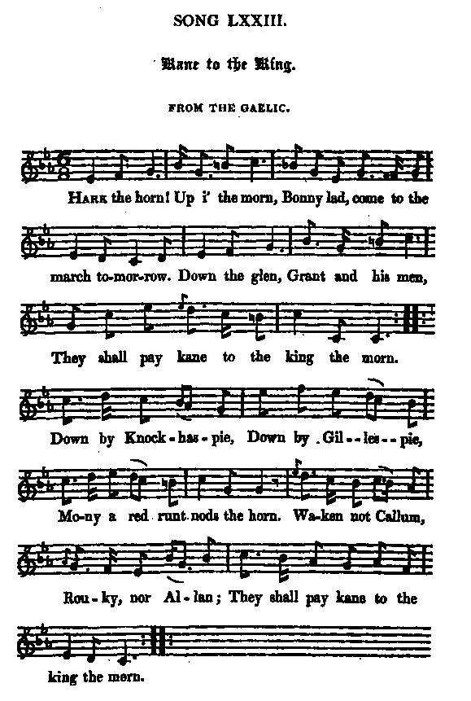
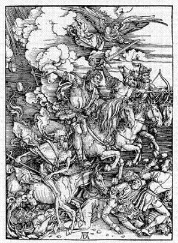

Kane to the King!
Tribut au roi
A "Highland Western movie"
Tune - Mélodie"Kane to the King"
from Hogg's "Jacobite Relics" 2nd Series N°73 page 147
Sequenced by Christian Souchon

|
To the tune:
"The song has a beautiful and most original Gaelic air. Frazer, in his Collection, calls it " Brigus mhic Ruaridh," (Briogais Mhic Ruaridh N°147 P.147) which, I suppose, has originated from some circumstance the same as the song ; that is, stealing from the men with the breeks." (In fact the "Stolen breeches" notated by Simon Fraser are a different tune!). Hogg in "Jacobite Relics", volume II. |
A propos de la mélodie:
"Ce morceau se chante sur une belle mélodie gaélique très originale. Fraser dans son recueil, l'intitule "Brigus mhic Ruaridh" (les braies de McRory, N°147 p.147), un titre justifié, j'imagine, parce qu'il y est aussi question de voler les porteurs de culottes." (En réalité les "Stolen breeches" sont une autre mélodie chez Fraser!) Hogg in "Jacobite Relics", volume II. |

|
KANE TO THE KING [1]
From the Gaelic [2] 1. Hark the horn! Up i' the morn, Bonny lad, come to the march tomorrow. Down the glen, Grant and his men, [3] They shall pay kane to the king the morn. Down by Knockhaspie, Down by Gillespie, Mony a red runt nods the horn. Waken not Callum, Rouky nor Allan; They shall pay kane to the king the morn. 2. Round the rock, Down by the knock, Mounaughty, Tannachty, Moy, and Glentrive, Brodie, and Balloch, And Ballindalloch, They shall pay kane to the king belyve. Let bark and brevin Blaze o'er Strathaven, When the red bullock is over the bourn: Then shall the maiden dread, Low on her pillow laid, Who's to pay kane to the king the morn. 3. Down the glen, True Highlandmen, Ronald, and Donald, and ranting Roy, Gather and drive, Spare not Glentrive, But gently deal with the lady of Moy. [4] Appin can carry through, So can Glengary too, And fairly they'll part to the hoof and the horn ; But Keppoch and Dunain too, They must be look'd unto, Ere they pay kane to the king the morn. 4. Rouse the steer Out of his lair, Keep his red nose to the west away; Mark for the seven, Or sword of Heaven; [5] And loud is the midnight sough o' the Spey. When the brown cock crows day, Upon the mottled brae, Then shall our gallant prince hail the horn That tells both to wood and cleuch, Over all Badenoch, Who's to pay kane to the king the morn. Source: "The Jacobite Relics of Scotland, being the Songs, Airs and Legends of the Adherents to the House of Stuart" collected by James Hogg, published in Edinburgh by William Blackwood in 1819. |
 |
LE TRIBUT AU ROI [1]
Traduit du gaélique [2] 1. C'est le cor! Et toi tu dors? Allons, en route! Il est temps crois-moi! Les Grant que j'a- [3] Perçois là-bas, Devront payer le tribut au roi. Là-bas chez Knockhaspie, Là-bas chez Gillespie, Les veaux roux portent la corne bas. N'éveille pas Callum, Ni Rouky, ni Allan; Il faut qu'ils payent tribut au roi! 2. Près du roc, A lieu le choc: Mounaughty, Moy, Balloch, Tannachty, Brodie, et Bal- loch, Ballindal- loch paieront tribut au roi, pardi! Vois l'écorce et l'aubier A Strathaven brûler! Le bouvillon roux s'est échappé! Sur sa couche allongée La vierge épouvantée D'avoir aussi tribut à payer! 3. Dans le glen, Les Highlandmen, Rassemblent et poussent le bétail; Et s'ils n'épar- gnent pas Glentrive, Ils sont pleins d'égard pour Lady Moy: [4] Appin et Glengarry Sont des bouviers hardis: Mêmes parts de cornes et sabots! Keppoch, Dunn aussi, mais Il faut les surveiller: Car le roi veut son tribut tantôt. 4. Sors le tau- reau de l'enclos, Et maintiens à l'ouest son mufle roux. Signe des Sept, Epée de Dieu, [5] La nuit on entend la Spey, c'est tout. Quand, au chant du coq brun Sur la motte de foin, Notre prince le cor sonnera, Les bois et les ravins Tout Badenoch, enfin, Sauront qui paye tribut au roi! (Trad. Christian Souchon(c)2010) |
|
[1]
Kane
: In Scotland, rent paid in kind, as in poultry, eggs, etc.; hence, any tax, tribute, or duty exacted. (Source: Wordnik)
[2] See Hogg's note to "McLean's Welcome" about the meaning of "From the Gaelic" . [3] "This seems to have been made by some Highland minstrel, to instigate the chiefs of the Prince's army to a foray on the Grants, and others of their Whig friends , after the retreat of the army to the north. I can make nothing of the chiefs that were to be robbed. They seem to have been gentlemen of the shires of Banff and Moray; and it must be an interesting amusement for the people of that traditionalistic country to find out who is meant." [4] " The lady of Moy " was herself in the prince's army, at the head of 200 brave Mackintoshes. The laird having refused to engage in the cause, she raised these men herself, and put them under the command of Donald Macgillavry; but kept mostly in the camp to encourage them in their fidelity to the prince." [5] Mark of the Seven, sword of Heaven : Biblical reminiscences (Apocalypse). Notes 3 and 4 are taken from Hogg's "Jacobite Relics". For more information on "reiving" (foray) click here . |
[1]
Kane
: ce mot désignait, en Ecosse, un loyer en nature (volaille, œufs, etc.), puis toute taxe, tribut ou droit exigés par l'autorité. (Source: Wordnik)
[2] Cf. la note de Hogg à la page "McLean's Welcome" pour le sens qu'il donne à l'expression "Transcrit du gaélique" . [3] "Ce chant semble avoir été composé par quelque ménestrel des Highlands pour inciter les chefs de l'armée du Prince à faire un razzia sur les Grants et leurs autres amis whigs , après le repli de l'armée vers le nord. Je ne sais pas qui sont les chefs sur la liste des victimes. On dirait qu'il s'agit de notables des districts de Banff et de Moray. Ce peut être un casse-tête amusant pour les gens du cru que de deviner qui est qui." [4] " The lady of Moy " faisait partie de l'armée du Prince, à la tête de 200 braves McKintosh. Son mari ayant refusé de se rallier à la Cause, elle avait levé elle-même cette compagnie qui fut placée sous le commandement de Donald McGillavry; elle demeura la plupart du temps dans le campement pour entretenir leur fidélité au Prince." [5] Signe des Sept, épée de Dieu : réminiscences de l'Apocalypse. Les notes 3 et 4 sont tirées des "Reliques Jacobites" de Hogg. Pour d'avantage d'informations sur le "reiving" (razzias) , cliquer ici . |
|
|
|